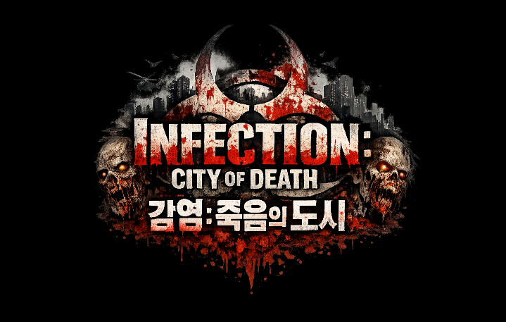
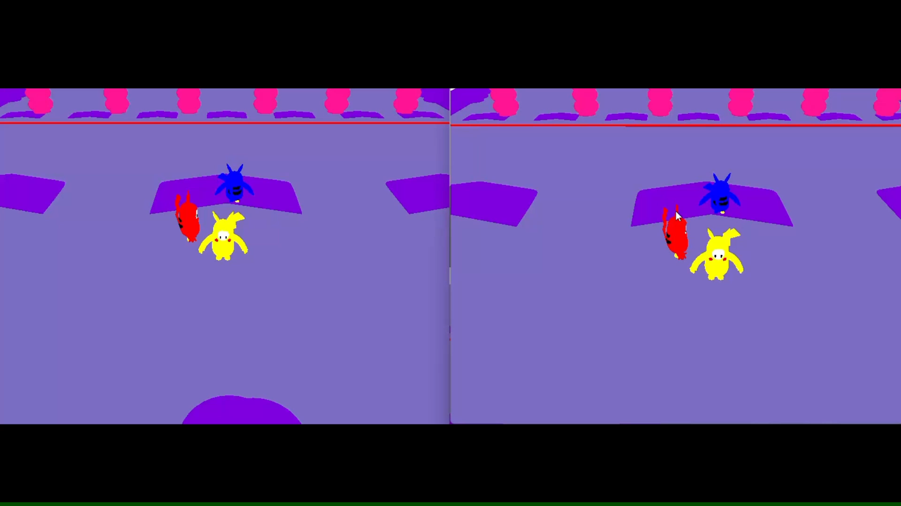
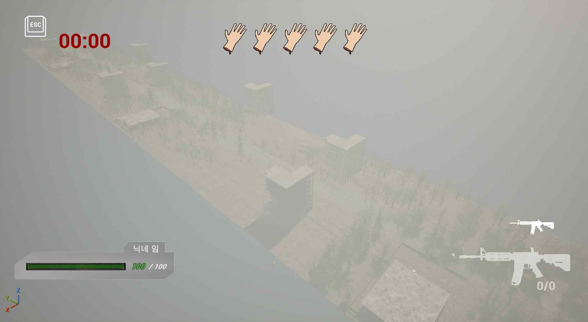
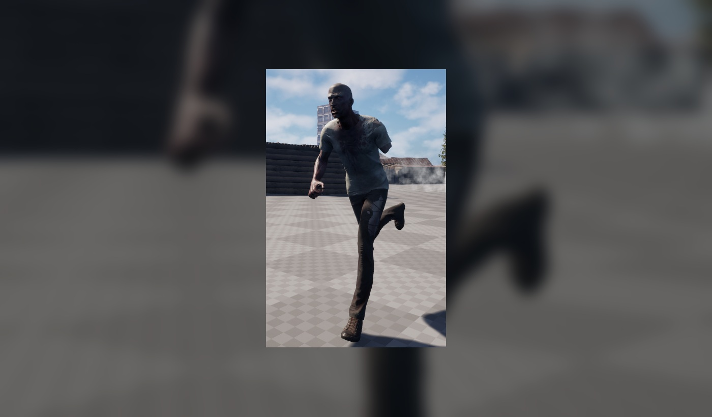
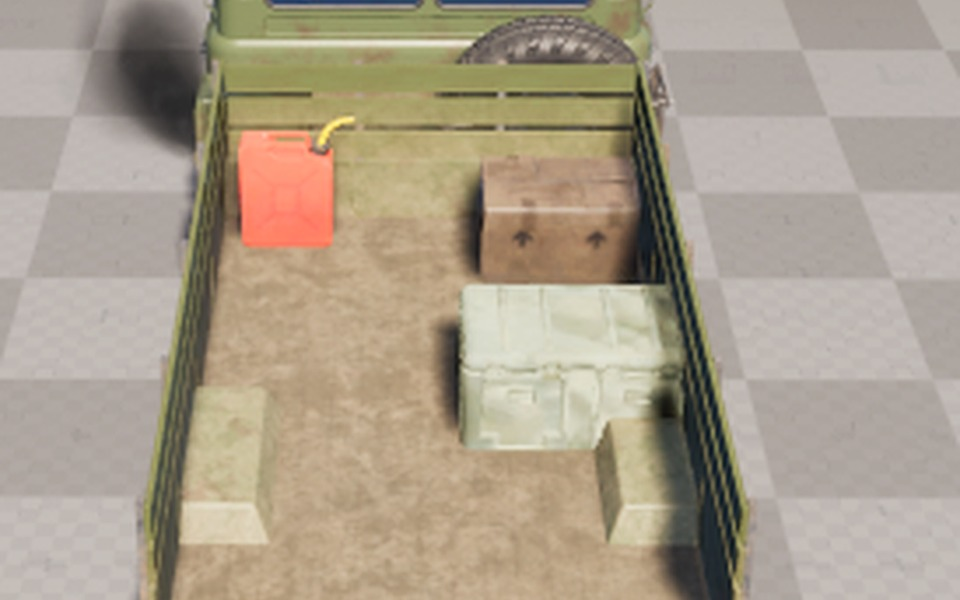

C++
객체지향 문법과 STL을 활용해 게임 로직과 상태 구조를 구현할 수 있습니다.
ProgrammingGAME CLIENT PORTFOLIO
박신우 Park Shin Woo
tlsdn0403@gmail.com
github.com/tlsdn0403



ABOUT ME / PAGE 01
객체지향 문법과 STL을 활용해 게임 로직과 상태 구조를 구현할 수 있습니다.
ProgrammingActor·Component, Collision·Trace, Behavior Tree, Vehicle·Interaction 흐름을 C++로 구현했습니다.
EngineC# 기반 UI/UX, Physics, Multiplayer, WebGL 클라이언트를 개발했습니다.
Engine브랜치·커밋 단위로 작업을 관리하고 팀 프로젝트 협업 기록을 정리했습니다.
CollaborationUnity와 Unreal Engine을 연동해 코드 작성, 디버깅, 빌드에 활용합니다.
IDE입력 → 로직 → 상태 → 렌더링 → 검증의 흐름을 직접 구현하고 실행 결과로 확인합니다.
PROJECT INDEX
UE5 · C++ · 협동 TPS
Gameplay / InteractionC++ · OpenGL · TCP/IP
Network / CollisionUnity · Multiplayer · WebGL
Board / Turn FSM대표 프로젝트의 역할과 설계 과정을 코드 흐름과 실행 화면 중심으로 정리했습니다.
PROJECT 01 / PAGE 01

PROJECT 01 / PAGE 02
피격 부위의 BoneName을 식별하고, 부위별 Mesh·Physics·상태 전환이 이어지도록 구조를 분리했습니다.

 RESULT 01
RESULT 01피격 지점에 맞는 절단 부위를 선택합니다.

RESULT 02다리 절단 이후 Crawling 상태로 전환합니다.
PROJECT 01 / PAGE 03
트럭을 단순 이동 수단이 아니라 적재·기관총·운전이 연결되는 상호작용 허브로 구성했습니다.

TRACK 01Trace로 적재 대상을 찾고 트럭의 적재 위치와 상태를 갱신합니다.
 TRACK 02
TRACK 02탑승 위치, 조작 권한, 발사 흐름을 하나의 상호작용으로 연결합니다.
 TRACK 03
TRACK 03Vehicle 입력과 카메라 전환을 연결해 탑승부터 운전까지 흐름을 완성합니다.
NETWORK GAME PROGRAMMING / PAGE 01
NETWORK GAME PROGRAMMING / PAGE 02

접속부터 종료까지 책임과 패킷 이동 시점을 먼저 설계했습니다.
Accept 순서로 번호 부여
입력과 Character 상태 전송
AABB Collision 확인
갱신 상태를 각 Client에 전달
NETWORK GAME PROGRAMMING / PAGE 03
실제 확인 결과에 맞춰 수치와 현상으로 교체합니다.
[클라이언트 수]개의 화면에서 위치와 상태가 동일하게 반영됨을 확인했습니다.
접속 순서에 따라 캐릭터 번호가 부여됨을 확인했습니다.
캐릭터와 장애물 충돌 결과가 플레이 상태에 반영되었습니다.
FLICKDOM / PAGE 02
 01
013개의 디스크로 칸을 점령하고 카드 패턴을 완성합니다.
 02
02드래그 방향과 힘으로 디스크를 발사해 전략을 설계합니다.
 03
03Host의 Join Code로 Client가 같은 방에 접속합니다.
AI 활용 능력 / PAGE 01
씬, 오브젝트, 컴포넌트 상태를 빠르게 확인하고 반복 작업을 보조했습니다.

보드, 디스크, 소품 리소스의 제작 방향을 정리하며 Blender 작업을 보조했습니다.

FLICKDOM / PAGE 03
5×5 Board 점령 Logic, Cell 선택·배치 후보, Card Pattern Matching, Stage 진행, Monkey 조작·Camera, Main Menu를 구현했습니다.
초기 Host/Client 동기화 기반 위에서 FSM 기반 턴 흐름과 상태 전환을 연결하고 Network 구조를 수정했습니다.
WebGL Build·배포 환경을 구성하고 접속, 게임 진행, 상태 동기화를 검증해 Release까지 마무리했습니다.